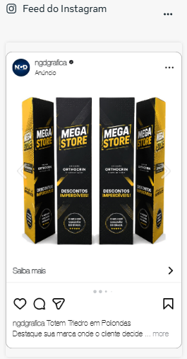
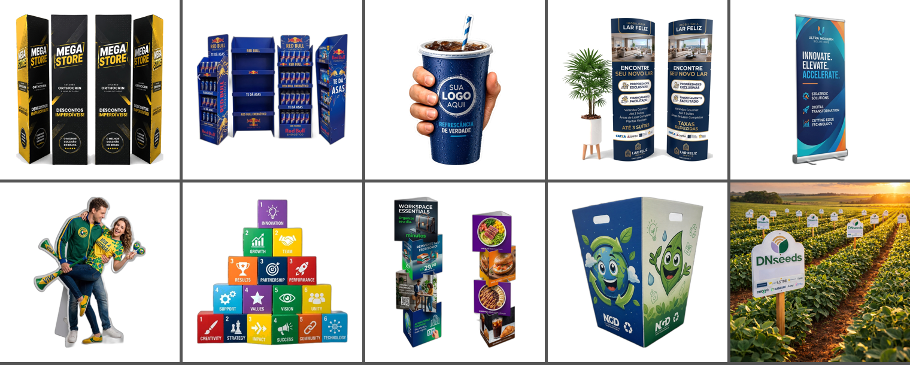
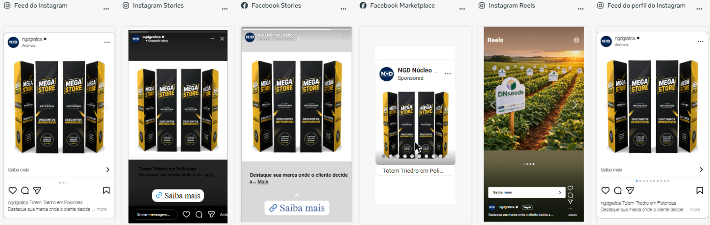
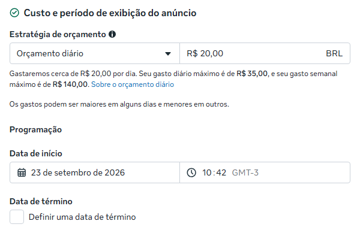
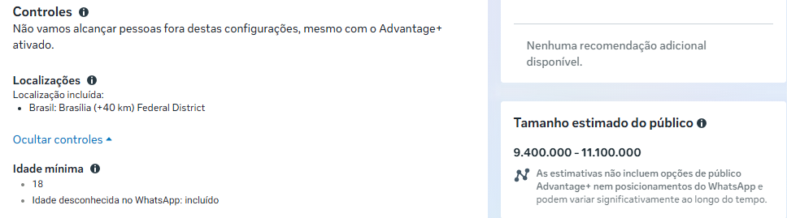

Relatório para aprovação · 24/09/2026 · Situação: pronto, em rascunho (nada publicado, nada gasto)
Montamos um anúncio no Instagram e no Facebook que mostra 10 produtos da NGD em sequência (carrossel). Quem se interessa toca em “Saiba mais” e vai direto para a página daquele produto no site, onde pede orçamento.
| Item | Como está |
|---|---|
| Quem assina o anúncio | Página do Facebook NGD Núcleo Gráfico (1,7 mil seguidores) e Instagram @ngdgrafica |
| Onde aparece | Feed, Stories e Reels do Instagram e do Facebook (a Meta escolhe onde rende mais) |
| Para quem | Pessoas em Brasília e até 40 km ao redor, com 18 anos ou mais |
| Objetivo | Levar pessoas para as páginas dos produtos no site (pedido de orçamento) |
| Investimento | R$ 20 por dia, com teto de R$ 300 na campanha inteira |
| Rastreamento | Código MP-104 em todos os links, para medir exatamente o que veio deste anúncio |
Destaque sua marca onde o cliente decide a compra.
Totens, displays e peças promocionais para lojas, mercados, farmácias e eventos. Fábrica própria em Brasília, com envio para todo o Brasil.
👉 Arraste para o lado, escolha o modelo e toque em Saiba mais para pedir seu orçamento.



| Card | Produto | Página no site |
|---|---|---|
| 1 | Totem Triedro em Poliondas | nucleografico.com.br/loja/produto/totem-triedro-em-poliondas/ |
| 2 | Display de Chão | nucleografico.com.br/loja/produto/display-de-chao/ |
| 3 | Display de Mão | nucleografico.com.br/loja/produto/display-recortado-mao-gigante/ |
| 4 | Totem Elíptico | nucleografico.com.br/loja/produto/totem-eliptico-em-poliondas/ |
| 5 | Banner Rollup | nucleografico.com.br/loja/produto/banner-rollup/ |
| 6 | Totem Réplica em Poliondas | nucleografico.com.br/loja/produto/totem-replica-em-poliondas/ |
| 7 | Cubo Promocional em Poliondas | nucleografico.com.br/loja/produto/cubo-promocional-em-poliondas/ |
| 8 | Totem Triangular | nucleografico.com.br/loja/produto/totem-triangular/ |
| 9 | Lixeira Personalizada em Poliondas | nucleografico.com.br/loja/produto/lixeira-personalizada-em-poliondas/ |
| 10 | Placa de Campo em Poliondas | nucleografico.com.br/loja/produto/placa-de-campo-poliondas/ |
Todos os links foram testados e abrem normalmente. As fotos são as originais em alta resolução do site, padronizadas em 1080 × 1080 px com fundo branco (a placa de campo manteve o cenário da plantação, por ficar melhor assim). Ficaram de fora, pelo limite de 10 cards da Meta: Backdrop e Pórtico.
A NGD tinha duas Páginas no Facebook. Passamos a usar a maior como página oficial dos anúncios.
| Página | Seguidores | Situação agora |
|---|---|---|
| NGD Núcleo Gráfico facebook.com/ngdgrafica | 1,7 mil | Página oficial do anúncio. Instagram @ngdgrafica conectado a ela. WhatsApp da loja conectado. |
| NGD Núcleo Gráfico Digital – Sinalização e Comunicação Visual facebook.com/nucleograficodigital | 16 | Página antiga. Não é mais usada no anúncio. Fica ativa por enquanto (ver pendências). |
| Nível | Configuração |
|---|---|
| Campanha | MP-104 Carrossel produtos (site) · objetivo Tráfego · limite de gastos R$ 300 |
| Conjunto de anúncios | MP-104 Brasilia e entorno - Site · destino: site · Brasília +40 km · 18+ · posicionamentos automáticos · R$ 20/dia |
| Anúncio | MP-104 Carrossel 10 produtos · formato carrossel · botão Saiba mais · ordem dos cards fixa (sem reordenação automática, sem card extra de perfil) |
| Links | Cada card com ?utm_source=meta&utm_medium=paid&utm_campaign=MP-104&ngd_ref=MP-104 |


| Cenário | Custo |
|---|---|
| Teste sugerido de 14 dias | cerca de R$ 280 |
| Máximo possível da campanha (trava) | R$ 300 |
| Se aprovado para continuar depois (1 mês) | cerca de R$ 600 (exige aumentar o limite, decisão nova) |
Proposta: rodar 14 dias e comparar o valor gasto com o número de pedidos de orçamento antes de decidir continuar.
Com a aprovação, publicamos. A Meta analisa o anúncio antes de ele entrar no ar (de minutos a 24 h); conferimos tudo nessa etapa e, se algo estiver errado, pausamos antes de gastar.